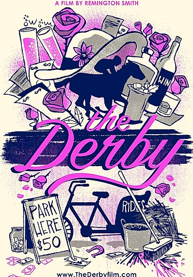
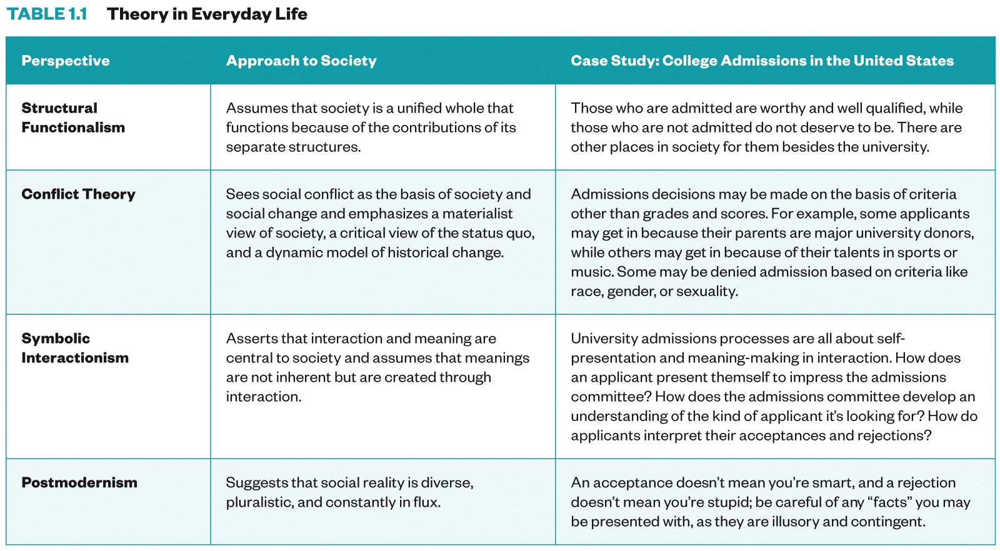

Sociological Perspectives¶
You are embarking on a fascinating journey as you learn to see, think, and analyze yourself and the world around you from a sociological perspective. This lesson invites you to see, think, and analyze from a sociological perspective. It provides a brief overview of the historical and intellectual development of sociology, along with describing how sociology is similar to and different from other social sciences. The lesson ends with a discussion of new theoretical approaches within the discipline. The tools presented here will help you build a foundation for new knowledge and insights into social life.
Learning Objectives¶
By the end of this lesson, you will be able to:
Define key terms related to the discipline of sociology.
Compare the major sociological theories.
Test theories of social norms.
Deadlines¶
Be sure to hand these assignments in this week:
Code of Conduct acknowledgment (Sunday at 11:55pm)
InQuizitive Chapter 1 (Sunday at 11:55pm)
Kentucky Derby reflection (Sunday at 11:55pm)

Watch¶
Discuss: The Derby¶

Following the haves and the have-nots during Kentucky Derby weekend via on-location interviews from varied perspectives, The Derby explores unseen sides of Kentucky’s biggest sporting event. From an anonymous reveler on Millionaires Row, to Guatemalan equine workers supporting their relatives, the film offers a thoughtful yet fun peek beyond the mint juleps and fancy hats and into the heart of the fastest two minutes in sports. Remington Smith
We start applying our sociological tools to film with the short film The Derby. The documentary is available for free on Vimeo. We will watch it together during class.
Be sure to have The Derby ready to roll at the start of class.
Login to the course Slack by 9:45am and say hi to your group! If you can, it might be easier to have your phone on one device and Slack on another.
Things to discuss as you watch the film:
What evidence did you see that was consistent with a structural-functionalist understanding of American society?
What evidence did you see that was consistent with a conflict theory understanding of American society?
Overall, which of the two did you find more convincing?
Questions¶
If you have any questions at all about what you are supposed to do on this assignment, please remember I am here to help. Reach out any time so I can support your success.
Post it in the Slack #lesson-sociological-perspectives channel!
Signup for virtual office hours!
Email me or your TA.
Lesson Keywords¶
Sociology
Society
Social Sciences
Sociological Perspective
Culture Shock
Sociological Imagination
Microsociology
Macrosociology
Theories
Paradigm
Positivism
Social Darwinism
Structural Functionalism
Solidarity
Mechanical Solidarity
Organic Solidarity
Anomie
Sacred
Profane
Empirical
Structural
Manifest Functions
Latent Functions
Conflict Theory
Social inequality
Alienation
Critical theory
Critical race theory
Feminist theory
Queer theory
Bureaucracies
Iron Cage
Verstehen
Symbolic Interactionism
Pragmatism
Postmodernism
Modernism
The least you need to know¶

Extra Resources¶
Social theories overview (part 1) (Khan Academy)
Social theories overview (part 2) (Khan Academy)
Functionalism (Khan Academy)
Conflict theory (Khan Academy)
Social constructionism (Khan Academy)
Symbolic interactionism (Khan Academy)
Macro and Micro (Khan Academy)
Introduction to Sociology (A Sociology Experiment)
Durkheim (A Sociology Experiment)
Marx (A Sociology Experiment)
Weber (A Sociology Experiment)
Intro to Soc Week 1: Sociological History (Professor Melendez)